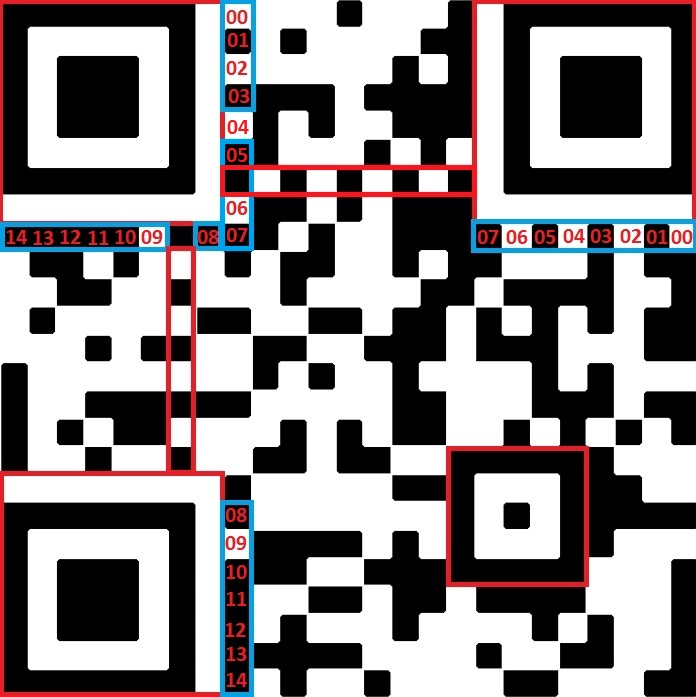

A QR code (Quick Response code) is a well common type of barcode used to contain data. Nowadays it becomes popular to send data to a person throught QRcode, it is a common advertising strategy since it simplifies the way to access to any data. It has many used such as payment, website login, restaurant ordering, joining a Wi-Fi netc etc. To give an example, it has been by many restaurants to display the menu, order the food, pay, and receive the invoice. It was particulary adapted for the pandemic period in 2020. Almost any smartphone in 2021 can scan the QR code to read and analyze the data behind that bar code. How come the smartphone managed to analyze it so quickly and in less than 5 seconds gives you the message behind that code ? How does it exactly work ?
This article will explain the core functionning of a QR code.

A QR code is always composed of 3 large squares located on the top left, top right and bottom left and a small square in the lower right corner. I have divided the QR code in 3 sections, you have red section, blue section and no color section. The red section is used for alignment, this alignment is used to know how the QR code must be oriented.
The blue section is composed of 2 sets of 15 bits, known as format info. Only one set is needed for the decoding but 2 is safer, and it is used as a backup. About those sets of bits, the bits from 00 to 09 are insignificant and can be ignored, only the bits from 10 to 14 is interesting because it gives us the format marker.